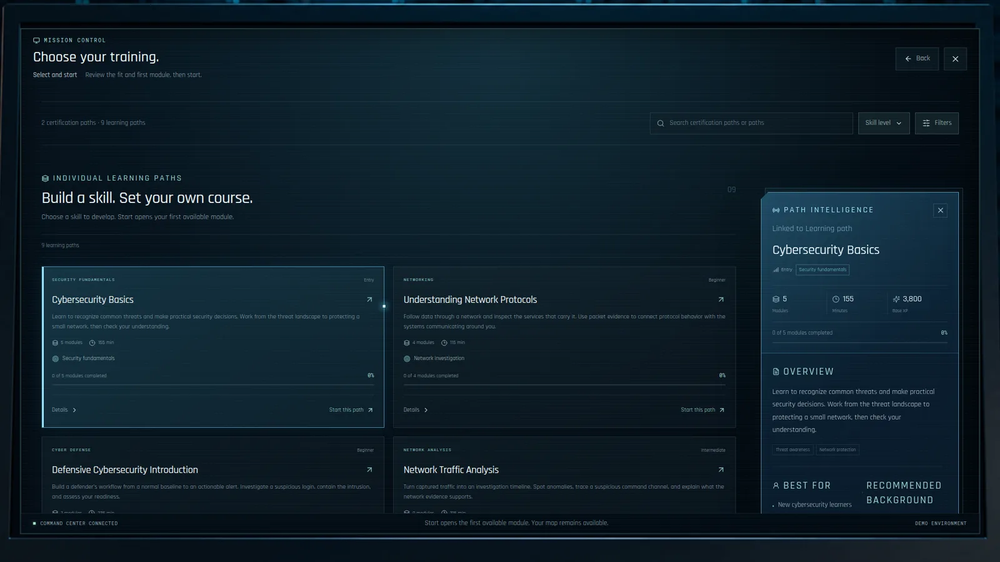
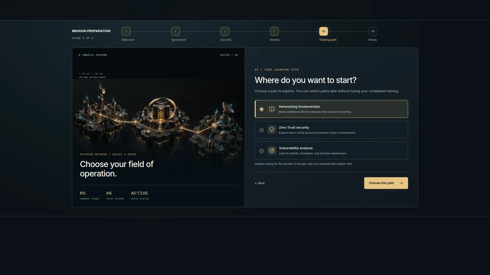
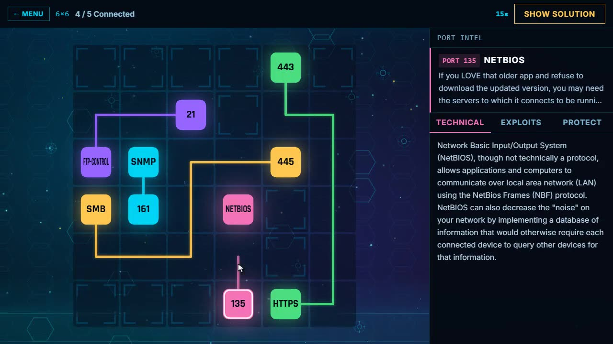

CASE STUDY / TRAINING + SIMULATION UX
Make the next decision clear.
Keep the learner moving.
My approach to training interfaces brings game UI craft to onboarding, learning paths, and mission entry. The work below explores how learners choose a direction, understand what comes next, and practice through visible consequences.
The design question
How does a new learner move from choosing a training path to understanding and starting the next activity?
My focus
Interface design, learner flow, and interactive prototyping. Compare directions, clarify module status, and connect selection to a briefing.
Scope of the examples
Design studies and working frontend prototypes with sample content and progress. The demos do not create live training attempts.
01 / PATH SELECTION
Show the commitment before the choice.
Keep learning-path options together with curriculum detail, so the learner can compare the scope before starting. The next action leads into the first activity’s briefing.
Try the path-selection flows ↗
02 / ONBOARDING
Give each screen one decision.
Break setup into distinct steps: welcome, agreement, security, identity, training direction, and ready. Keep the current choice and forward action easy to locate.
Explore onboarding ↗
03 / TRAINING GAMES
Make the skill the controller.
Six minigames built for a commercial cyber range, each drilling one skill in a few minutes. See gameplay from every one and the design thinking behind it.
Watch the games ↗
Animated globe
See module context on a live globe, then follow the camera into the selected location.
Explore the globe demo ↗Playable practice
Keep Finance Online makes the balance between service availability and security visible through three rounds and a debrief.
Play the minigame ↗What I would validate
Can a new learner explain their next action? Can they recover after an incorrect decision? These are evaluation questions, rather than measured outcomes.
Looking for UI / UX experience on your team?
I can walk you through the design decisions and prototypes.